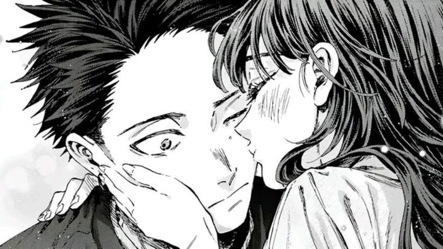

Presiona la imagen ❤︎
Durante mucho tiempo hubo un sentimiento que me acompañó sin que supiera explicarlo. Era una especie de añoranza por una vida que aún no existía, pero que mi corazón insistía en imaginar. Cuando todo se sentía demasiado pesado, cerraba los ojos y pensaba en un lugar lejos de todo, donde pudiera vivir en paz, donde el tiempo transcurriera despacio y donde, por fin, pudiera sentir que pertenecía a algún sitio.
Nunca tuve claro cómo sería ese lugar. Solo sabía cómo quería sentirme cuando llegara a él.
Entonces apareciste tú.
Y entendí que aquello que había estado buscando nunca fue un lugar, sino una persona. Descubrí que la tranquilidad con la que había soñado durante tantos años podía esconderse en una conversación contigo, en la manera en que me haces sonreír sin darme cuenta o en la calma que siento simplemente al saber que existes.
Contigo comprendí que que la vida que tanto imaginaba estaba hecha de un amor sereno que convierte lo cotidiano en un lugar donde siempre quiero volver.